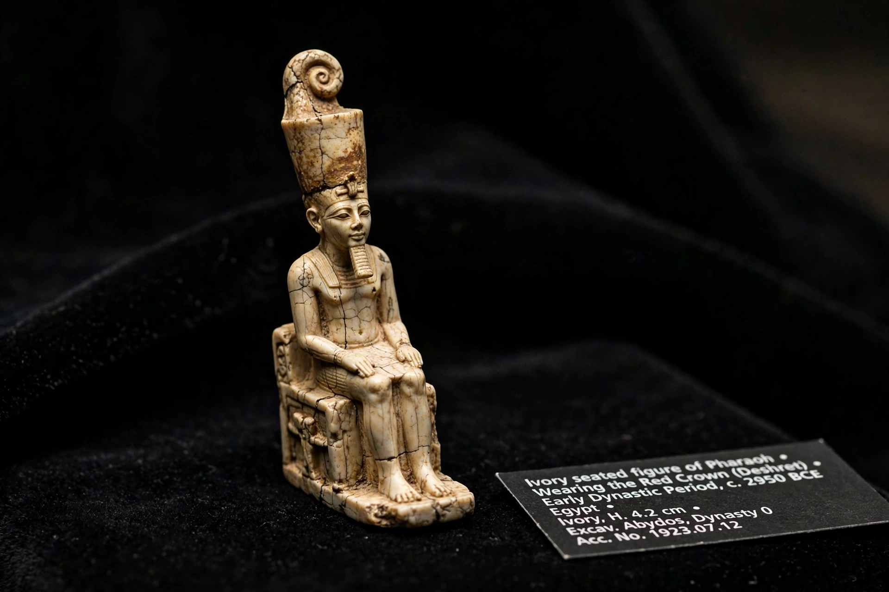

Khufu
| Khufu | |
|---|---|
 | |
| Reign | c. 2589–2566 BC (Fourth Dynasty) |
| Predecessor | Sneferu (his father) |
| Successor | Djedefre (his son) |
| Parents | Sneferu and Hetepheres I |
| Monument | Great Pyramid of Giza |
| Greek name | Cheops |
Khufu (Ancient Egyptian: Ḫw.f-wj, "He protects me"), known to the Greeks as Cheops, was an ancient Egyptian pharaoh of the Fourth Dynasty during the Old Kingdom. He reigned for roughly two to three decades in the twenty-sixth century BC and is best known as the builder of the Great Pyramid of Giza, the largest Egyptian pyramid and the only one of the Seven Wonders of the Ancient World to survive substantially intact.
Family and reign
Khufu was the son of Sneferu, the prolific pyramid-building founder of the Fourth Dynasty, and Queen Hetepheres I, whose richly furnished (though robbed) tomb was found near the Great Pyramid in 1925. Khufu's own court included his sons Kawab, Djedefre, Khafre and Hordjedef, and his vizier Hemiunu, who is credited as the architect of the Great Pyramid. Inscriptions record expeditions under Khufu to the turquoise and copper mines of Sinai (Wadi Maghareh), to the diorite quarries near Abu Simbel, and south toward Nubia and Punt. The Wadi al-Jarf papyri — the oldest inscribed papyri known — include the logbook of inspector Merer, whose crews transported Tura limestone by boat to Khufu's pyramid, called Akhet Khufu ("Horizon of Khufu").
The Great Pyramid
Khufu chose the Giza plateau for his tomb, raising a pyramid of some 2.3 million blocks to a height of 146.6 m over a project lasting an estimated 20–30 years. Within it lie the unfinished subterranean chamber, the "Queen's Chamber" and the King's Chamber of red granite beneath a corbelled Grand Gallery. Two intact cedar funerary boats were found in pits beside the pyramid in 1954; one, reassembled, is 43.6 m long and is now displayed at the Grand Egyptian Museum. Although the burial chamber was robbed in antiquity, paint quarry marks in the relieving chambers — including Khufu's cartouche — firmly attribute the monument to him.
Portraits and reputation
Paradoxically for the builder of Egypt's largest monument, the only certainly identified portrait of Khufu is a tiny ivory statuette, about 7.5 cm tall, found at Abydos in 1903 — the smallest known royal statue from the Old Kingdom. Later Egyptian tradition remembered him ambivalently: the Westcar Papyrus, written centuries after his death, portrays a capricious king entertained by magicians, while Herodotus — writing two thousand years on — relayed hostile tales of a tyrant who closed temples and enslaved his people, a reputation modern scholars reject, since pyramid labour was performed by well-fed Egyptian crews rather than slaves.